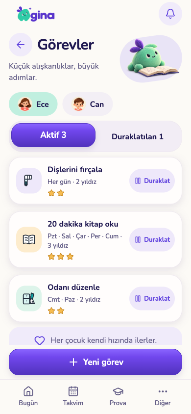
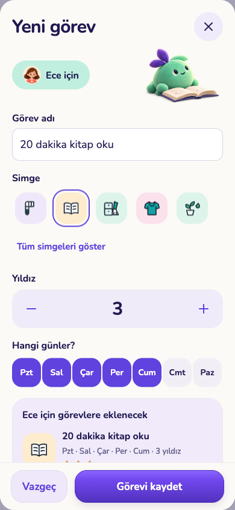
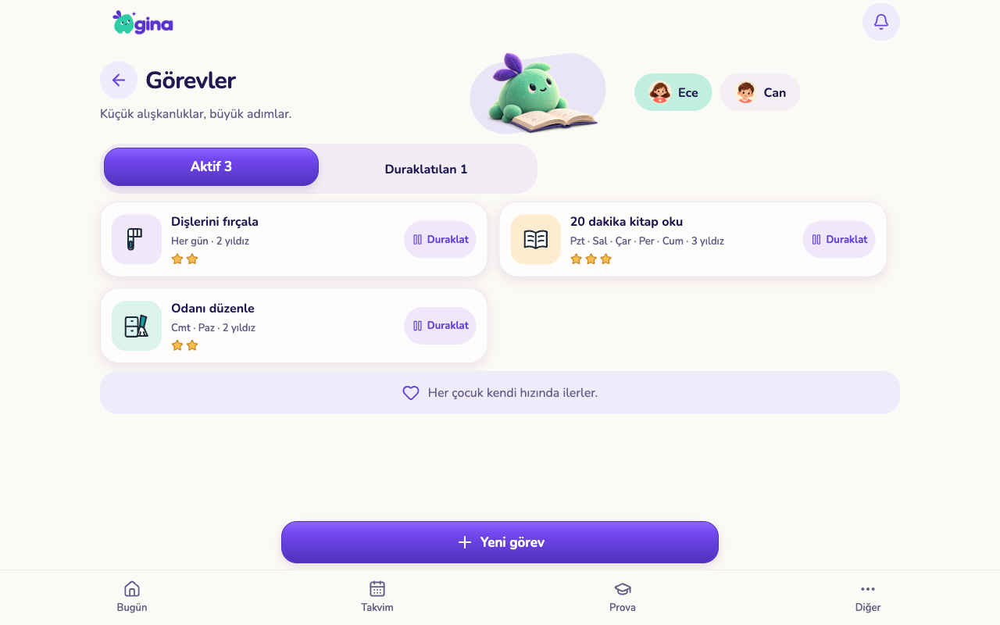
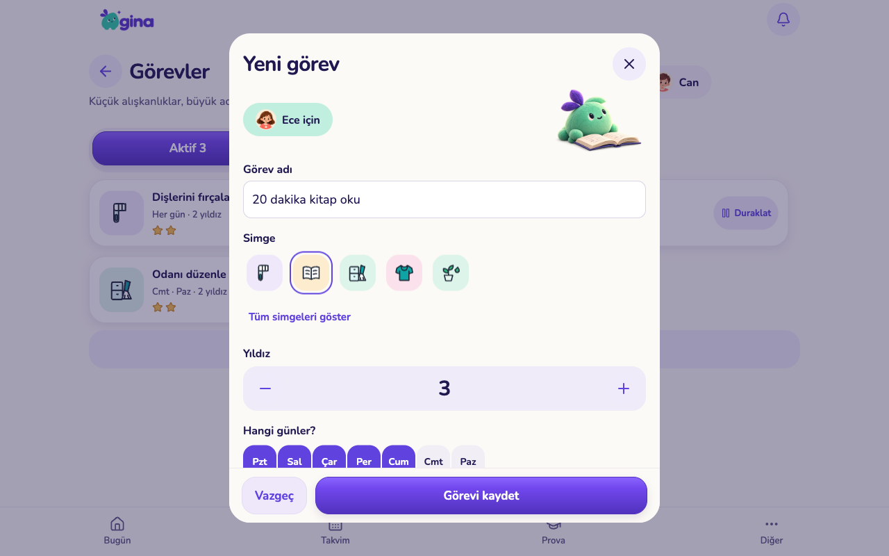

Görevler · uygulama görüntüleri
Onaylı tasarım uygulandı. Aşağıdaki telefon ve tablet görüntüleri çalışan uygulamanın web sürümünden, yalıtılmış örnek verilerle alınmıştır. TestFlight sürümü değildir.
Telefon · 390 × 844
Görev listesi
Yeni görev
Tablet · 1280 × 800
Görev listesi
Yeni görev — içerik kaydırılır, kaydetme alanı sabittir
Onaylı referans ve uygulama
Onaylı tasarım maketi Uygulama — mevcut logo, maskot, font ve TaskIcon seti
Uygulama — mevcut logo, maskot, font ve TaskIcon seti
iPhone simülatörü
iOS 26.5 / iPhone 17 Pro. Kaydetme ve duraklatma burada da denendi. Çerçeve ve geliştirme göstergeleri simülatöre aittir.
Sıradaki tasarım: Ödüller
Henüz uygulamaya alınmadı. Talepler ve aile kataloğu ayrı sekmeler. “Aktif” bir durum bilgisidir; uygulamada küçük, sakin bir etiket olacak. Ödül onayı, teslim, iptal ve iade davranışları korunacak.

Uygulama ve doğrulama notları